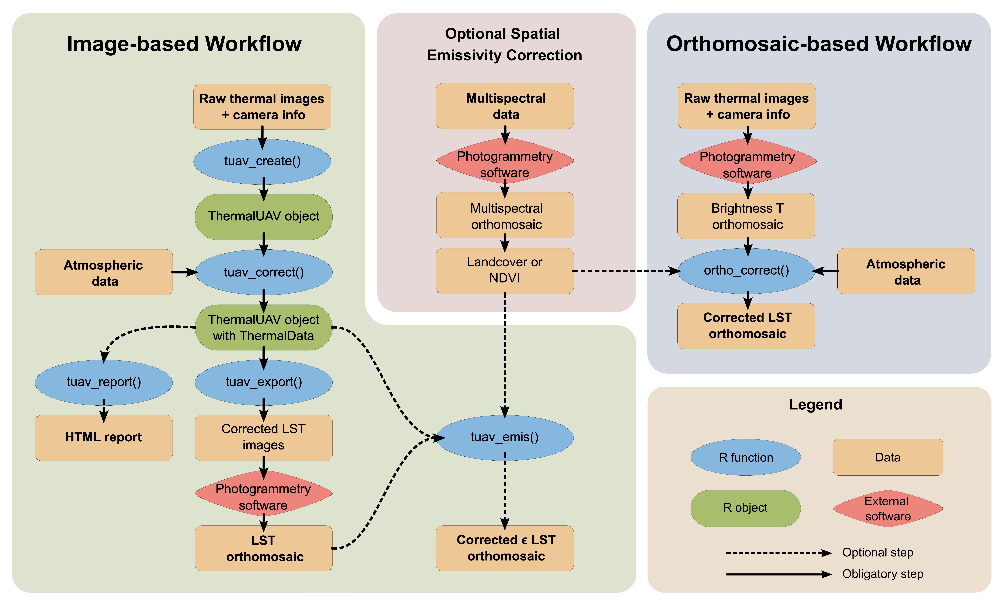

1. Overview
The goal of theRmalUAV is to clean and correct raw thermal UAV data.
There are two workflows that can be followed:
- Image-based Workflow: to perform corrections at image level
- Orthomosaic-based Workflow: to perform corrections on an orthomosaic containing uncorrected brightness temperatures

2. Installation
theRmalUAV
theRmalUAV is not on CRAN (yet). You can install the development version of theRmalUAV from GitHub:
Note: Windows users need RTools to build packages from source files (which is basically what you do when you install from GitHub). RTools is not a R package, rather its a set of utilities that you install separately. You can download and install RTools from https://cran.r-project.org/bin/windows/Rtools/. Alternately, you can install RTools from within R by running:
install.packages('installr')
installr::install.Rtools()After RTools is installed, you can install theRmalUAV from GitHub
## install.packages('remotes')
remotes::install_github("christophemetsu/theRmalUAV")Dependent Packages
theRmalUAV requires several dependent packages, including fs, progress, rmarkdown, svDialogs, terra, tiff, and others (see the DESCRIPTION file for a complete list). Normally missing packages are installed at the same time, but if you get an error message about a missing package(s), install the dependent packages separately (i.e., from the ‘Packages’ pane in RStudio) then run remotes::install_github(“christophemetsu/theRmalUAV”, dependencies=FALSE).
exiftool
To read the EXIF data from the image files, theRmalUAV requires an external command line tool called ‘exiftool’.
UPDATE: As of version 1.6.0, you no longer need to manually install the exiftool command line utility. Rather you can install by running:
exiftoolr::install_exiftool()To verify it worked:
exiftoolr::exif_version()
#> Using ExifTool version 12.50
#> [1] "12.50"Alternately, you can install exiftool manually by downloading it from http://www.sno.phy.queensu.ca/~phil/exiftool/. Be sure to unzip it to a folder on the path (e.g, c:) and rename the executable file from exiftool(-k).exe to exiftool.exe.
3. Supported thermal sensors
To obtain a table of available thermal sensor which you can use, run tuav_cameras() with no argument. If your sensor is not listed, you may submit an issue on GitHub to have it added. For details see the help page (?tuav_cameras) or contact the package author.